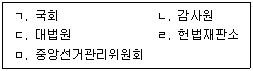
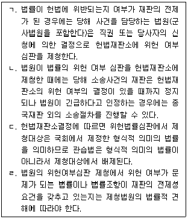

PSAT-헌법 (2019-03-09 기출문제)
1. 조세법률주의에 대한 설명으로 옳지 않은 것은? (다툼이 있는 경우 판례에 의함)
- 세금의 사용에 대해 이의를 제기하거나 잘못된 사용의 중지를 요구하는 내용의 기본권은 인정되지 않는다.
- 조세법규 등 국민의 기본권을 직접적으로 제한하거나 침해할 소지가 있는 법규에서는 구체성ㆍ명확성의 요구가 강화되어 그 위임의 요건과 범위가 일반적인 급부행정법규의 경우보다 더 엄격하게 제한적으로 규정되어야 한다.
- 조세법률주의는 납세의무를 성립시키는 납세의무자, 과세물건, 과세표준, 과세기간, 세율 등의 모든 과세요건과 조세의 부과ㆍ징수절차는 모두 국민의 대표기관인 국회가 제정한 법률로 이를 규정하여야 한다는 과세요건 법정주의를 내용으로 한다.
- 실효된 법률조항을 유효한 것으로 해석하여 과세의 근거로 삼는 것은 관련 당사자가 공평에 반하는 이익을 얻을 가능성을 막기 위한 것으로 헌법상 권력분립원칙과 조세법률주의의 원칙에 반하지 않는다.
(정답률: 알수없음)

2. 국회의 위원회에 대한 설명으로 옳지 않은 것은?
- 국회상임위원회 중 정무위원회는 국민권익위원회 소관에 속하는 사항을 관장한다.
- 교섭단체에 소속되지 않은 의원의 상임위원 선임은 국회의장이 행한다.
- 정보위원회는 소관 사항을 분담ㆍ심사하기 위하여 상설소위원회를 둘 수 있다.
- 상임위원은 교섭단체 소속 의원 수의 비율에 따라 각 교섭단체 대표의원의 요청으로 의장이 선임하거나 개선한다.
(정답률: 알수없음)
3. 양심의 자유에 대한 설명으로 옳지 않은 것은? (다툼이 있는 경우 판례에 의함)
- 진지한 윤리적 판단과는 관계없는 음주측정요구에 응할 것인가의 고민은 양심의 자유의 보호대상이 아니다.
- 헌법에 의해 보호받는 양심은 법질서와 도덕에 부합하는 사고를 가진 다수의 양심을 의미한다.
- 법률해석에 다른 의견이 있는 경우와 같이 개인의 인격형성과의 관련성이 거의 없는 의견은 양심의 자유의 보호대상에 속하지 않는다.
- 양심적 결정을 외부로 표현하고 실현할 수 있는 권리인 양심실현의 자유는 법질서에 위배되거나 타인의 권리를 침해할 수 있기 때문에 법률에 의하여 제한될 수 있다.
(정답률: 알수없음)
4. 직업의 자유에 대한 설명으로 옳은 것은? (다툼이 있는 경우 판례에 의함)
- 계속성과 생활수단성을 개념표지로 하는 직업의 개념에 비추어 보면 학업 수행이 본업인 대학생의 경우 방학기간을 이용하여 또는 휴학 중에 학비 등을 벌기 위해 학원강사로서 일하는 행위는 일시적인 소득활동으로서 직업의 자유의 보호영역에 속하지 않는다.
- 직업수행의 자유는 직업결정의 자유에 비하여 상대적으로 그 침해의 정도가 작다고 할 것이므로 이에 대하여는 공공복리 등 공익상의 이유로 비교적 넓은 법률상의 규제가 가능하다.
- 소주판매업자에게 자도소주구입을 강제하는 자도소주구입명령제도는 독과점을 방지하고, 중소기업을 보호한다는 공익적 목적달성을 위한 적합한 수단이므로 소주판매업자의 직업의 자유를 침해하지 않는다.
- 대통령령으로 정하는 공공기관 및 공기업으로 하여금 매년 정원의 100분의 3 이상씩 34세 이하의 청년 미취업자를 채용하도록 한 이른바 '청년할당제'는 35세 이상 미취업자들의 평등권, 직업선택의 자유를 침해한다.
(정답률: 알수없음)
5. 공무담임권에 대한 설명으로 옳지 않은 것은? (다툼이 있는 경우 판례에 의함)
- 지방자치단체의 장이 금고 이상의 형을 선고받고 그 형이 확정되지 아니한 경우 부단체장이 그 권한을 대행하도록 규정한 ｢지방자치법｣ 조항은 지방자치단체장의 공무담임권을 침해한다.
- 5급 공개경쟁채용시험 응시연령의 상한을 32세까지로 제한하고 있는 것은 기본권 제한을 최소한도에 그치도록 요구하는 헌법 제37조제2항에 부합된다고 보기 어렵다.
- 공무담임권의 보호영역에는 공직취임기회의 자의적인 배제뿐만 아니라 공무원 신분의 부당한 박탈이나 권한의 부당한 정지, 승진시험의 응시제한이나 이를 통한 승진기회의 보장 등이 포함된다.
- 공무담임권은 각종 선거에 입후보하여 당선될 수 있는 피선거권과 공직에 임명될 수 있는 공직취임권을 포괄하는 권리이다.
(정답률: 알수없음)
6. 대통령의 사면권에 대한 설명으로 옳지 않은 것은?
- 일반에 대한 감형에서는 특별한 규정이 없는 경우 형이 변경되지만, 특정한 자에 대한 감형에서는 특별한 사정이 있는 경우를 제외하고는 형의 집행이 경감된다.
- 일반사면뿐만 아니라 특별사면의 경우에도 국무회의의 심의를 거쳐야 한다.
- 복권은 형의 집행이 끝나지 아니한 자 또는 집행이 면제되지 아니한 자에 대하여는 하지 아니한다.
- 사면심사위원회는 위원장 1명을 포함한 9명의 위원으로 구성하며, 위원장은 법무부장관이 되고, 위원은 대통령이 임명하거나 위촉하되, 공무원이 아닌 위원을 4명 이상 위촉하여야 한다.
(정답률: 알수없음)
7. 선거에 대한 설명으로 옳지 않은 것은? (다툼이 있는 경우 판례에 의함)
- 헌법 제24조는 모든 국민은 법률이 정하는 바에 의하여 선거권을 가진다고 규정함으로써 법률유보의 형식을 취하고 있는데, 이것은 국민의 선거권이 법률이 정하는 바에 따라서 인정될 수 있다는 포괄적인 입법권의 유보 하에 있음을 의미하는 것이다.
- 대통령선거ㆍ지역구국회의원선거 및 지방자치단체의 장 선거의 후보자는 점자형 선거공보를 작성ㆍ제출하여야 하되, 책자형 선거공보에 그 내용이 음성ㆍ점자 등으로 출력되는 인쇄물 접근성 바코드를 표시하는 것으로 대신할 수 있다.
- 선거일 현재 선거범으로서 100만 원 이상의 벌금형의 선고를 받고 그 형이 확정된 후 5년 또는 형의 집행유예의 선고를 받고 그 형이 확정된 후 10년을 경과하지 아니한 사람은 선거권이 없다.
- 선거일 현재 5년 이상 국내에 거주하고 있는 40세 이상의 국민은 대통령의 피선거권이 있으며, 이 경우 공무로 외국에 파견된 기간과 국내에 주소를 두고 일정기간 외국에 체류한 기간은 국내거주기간으로 본다.
(정답률: 알수없음)
8. 국회의 권한에 대한 설명으로 옳지 않은 것은?
- 국회가 의원의 자격 유무를 심사하여 그 자격이 없는 것으로 의결할 때에는 재적의원 3분의 2 이상의 찬성이 있어야 한다.
- 국정조사위원회는 의결로써 국회의 폐회 중에도 활동할 수 있고 조사와 관련한 보고 또는 서류의 제출을 요구하거나 조사를 위한 증인의 출석을 요구하는 경우에는 의장을 경유하여야 한다.
- 국채를 모집하거나 예산외에 국가의 부담이 될 계약을 체결하려 할 때에는 정부는 미리 국회의 의결을 얻어야 한다.
- 국회는 중요한 국제조직에 관한 조약의 체결ㆍ비준에 대한 동의권을 가진다.
(정답률: 알수없음)
9. 범죄피해자구조청구권에 대한 설명으로 옳은 것은?
- 외국인이 구조피해자이거나 유족인 경우에는 해당 국가의 상호보증이 있는 경우에 한하여 범죄피해자구조청구권을 행사할 수 있다.
- 범죄피해자구조청구권은 생명, 신체에 대한 피해를 입은 경우에 적용되는 것은 물론이고 재산상 피해를 입은 경우에도 적용된다.
- 구조대상 범죄피해는 대한민국 영역 안에서 또는 대한민국 영역 밖에서 행하여진 범죄로 인한 피해를 말한다.
- 범죄피해자구조금의 지급신청은 해당 구조대상 범죄피해의 발생을 안 날부터 3년이 지나거나 해당 구조대상 범죄피해가 발생한 날부터 5년이 지나면 할 수 없다.
(정답률: 알수없음)
10. 정당해산심판제도에 대한 설명으로 옳은 것은? (다툼이 있는 경우 판례에 의함)
- 헌법재판소가 정당해산의 결정을 하는 때에는 재판관 과반수의 찬성을 요한다.
- 정당해산결정이 선고되면, 대체정당의 결성이 금지되나 동일한 당명을 사용하는 것은 가능하다.
- 헌법재판소의 결정으로 정당이 해산될 경우에 정당의 기속성이 강한 비례대표국회의원은 의원직을 상실하나, 국민이 직접 선출한 지역구 국회의원은 의원직을 상실하지 않는다.
- 정부가 정당해산심판을 제소하기 위해서는 국무회의의 심의를 거쳐야 하는데, 대통령의 직무상 해외 순방 중 국무총리가 주재한 국무회의에서 정당해산심판청구서 제출안에 대한 의결을 하더라도 위법하지 않다.
(정답률: 알수없음)
11. 국회에 대한 설명으로 옳은 것은?
- 국회의원의 수는 헌법에 규정되어 있으며, 300인으로 한다.
- 국회의원은 국회에서 직무상 행한 발언과 표결에 관하여 국회 내에서 책임을 지지 않는다.
- 국회의원은 헌법상 청렴의 의무가 있으며, 그 지위를 남용하여 재산상의 권리, 이익을 취득할 수 없다.
- 국회의 정기회는 법률이 정하는 바에 의하여 매년 1회 집회되며, 임시회는 국회재적의원 5분의 1 이상의 요구에 의하여 집회된다.
(정답률: 알수없음)
12. 국무회의에 대한 설명으로 옳지 않은 것은?
- 국무위원은 정무직으로 하며 의장에게 의안을 제출하고 국무회의의 소집을 요구할 수 있다.
- 국유재산처분의 기본계획은 국무회의의 심의를 거쳐야 한다.
- 국무회의와 국민경제자문회의는 헌법상 그 설치를 명문으로 규정하고 있는 필수적 헌법기관이다.
- 국무조정실장ㆍ국가보훈처장ㆍ인사혁신처장ㆍ법제처장ㆍ식품의약품안전처장 그 밖에 법률로 정하는 공무원은 필요한 경우 국무회의에 출석하여 발언할 수 있다.
(정답률: 알수없음)
13. 헌법에서 명시적으로 규칙제정권을 부여하고 있는 기관만을 모두 고른 것은?

- ㄴ, ㅁ
- ㄱ, ㄷ, ㄹ
- ㄱ, ㄷ, ㄹ, ㅁ
- ㄱ, ㄴ, ㄷ, ㄹ, ㅁ
(정답률: 알수없음)
14. 개인정보보호에 대한 설명으로 옳지 않은 것은? (다툼이 있는 경우 판례에 의함)
- 개인정보란 살아 있는 개인에 관한 정보로서 성명, 주민등록번호 및 영상 등을 통하여 개인을 알아볼 수 있는 정보(해당 정보만으로는 특정 개인을 알아볼 수 없더라도 다른 정보와 쉽게 결합하여 알아볼 수 있는 것을 포함한다)를 말한다.
- 정보주체는 자신의 개인정보 처리로 인하여 발생한 피해를 신속하고 공정한 절차에 따라 구제받을 권리를 가진다.
- 개인정보처리자는 정보주체가 필요한 최소한의 정보 외의 개인정보 수집에 동의하지 아니한다는 이유로 정보주체에게 재화 또는 서비스의 제공을 거부하여서는 아니 된다.
- 국민건강보험공단이 피의자의 급여일자와 요양기관명에 관한 정보를 수사기관에 제공하는 것은, 당해 정보가 개인의 건강에 관한 것이기는 하나 개인의 건강 상태에 관한 막연하고 추상적인 정보에 불과하여 보호의 필요성이 높지 않을 뿐만 아니라, 검거목적에 필요한 최소한의 정보를 제공한 것으로써 그의 개인정보자기결정권을 침해하지 아니한다.
(정답률: 알수없음)
15. 대한민국 국민이 되는 요건에 대한 설명으로 옳지 않은 것은?
- 출생 당시에 부 또는 모가 대한민국의 국민인 자는 출생과 동시에 대한민국 국적을 취득한다.
- 대한민국에서 발견된 기아(棄兒)는 대한민국에서 출생한 것으로 추정한다.
- 국적을 후천적으로 취득하는 방법으로 인지나 귀화 등이 있다.
- 부모 중 어느 한쪽이 국적이 없는 경우에 대한민국에서 출생한 자는 대한민국 국적을 취득한다.
(정답률: 알수없음)
16. 주거의 자유에 대한 설명으로 옳지 않은 것은? (다툼이 있는 경우 판례에 의함)
- 헌법 제16조가 보장하는 주거의 자유는 개방되지 않은 사적 공간인 주거를 공권력이나 제3자에 의해 침해당하지 않도록 함으로써 국민의 사생활영역을 보호하기 위한 권리이다.
- 헌법 제16조에서 영장주의에 대한 예외를 마련하고 있지 않으므로 주거에 대한 압수나 수색에 있어 영장주의가 예외 없이 반드시 관철되어야 함을 의미하는 것이다.
- 주거의 자유와 관련한 영장주의는 1962년 제5차 헌법개정에서 처음으로 헌법에 명시되었다.
- ｢출입국관리법｣에 의한 보호에 있어서 용의자에 대한 긴급보호를 위해 그의 주거에 들어간 것이라면 그 긴급보호가 적법한 이상 주거의 자유를 침해한 것으로 볼 수 없다.
(정답률: 알수없음)
17. 헌법기관의 권한대행에 대한 설명으로 옳은 것은?
- 국무총리 사고 시 대통령이 지명하는 국무위원이 그 권한을 대행한다.
- 국회의장의 사고 시 권한대행자는 의장이 지정하는 부의장이고 의장과 부의장 모두 사고가 있을 때에는 임시의장을 선출한다.
- 대법원장의 궐위 시 대법관 중 최연장자가 그 권한을 대행한다.
- 헌법재판소장의 궐위 시 임명일자 순으로 권한대행을 하며 임명일자가 같을 시에는 연장자 순으로 한다.
(정답률: 알수없음)
18. 법원에 대한 설명으로 옳은 것은?
- 공개재판의 원칙에 따라 재판의 판결을 공개해야 하지만 국가의 안전보장 또는 안녕질서를 방해하거나 선량한 풍속을 해할 염려가 있을 때에는 법원의 결정으로 공개하지 않을 수 있다.
- 대법원에는 대법관이 아닌 법관은 둘 수 없다.
- 비상계엄하의 군사재판은 군인ㆍ군무원의 범죄나 군사에 관한 간첩죄의 경우와 초병ㆍ초소ㆍ유독음식물공급ㆍ포로에 관한 죄중 법률이 정한 경우에 한하여 단심으로 할 수 있으나, 사형을 선고한 경우에는 그러하지 아니하다.
- 국회의원 선거의 선거소송은 중앙선거관리위원회에 대한 선거소청을 거쳐 대법원이 관할한다.
(정답률: 알수없음)
19. 국무총리에 대한 설명으로 옳지 않은 것은?
- 국무총리는 국회나 그 위원회에 출석하여 국정처리상황을 보고하거나 의견을 진술하고 질문에 응답할 수 있다.
- 국무총리는 국무위원의 해임을 대통령에게 건의할 수 있다.
- 국무총리는 국무회의의 의장이 되며, 행정에 관하여 대통령의 명을 받아 행정각부를 통할한다.
- 국무총리는 소관 사무에 관하여 법률이나 대통령령의 위임 또는 직권으로 총리령을 발할 수 있다.
(정답률: 90%)
20. 사법권의 독립에 대한 설명으로 옳지 않은 것은? (다툼이 있는 경우 판례에 의함)
- 작량감경을 하여도 집행유예를 선고할 수 없도록 법정형을 정한 것은 법관의 양형결정권을 침해하여 법관독립의 원칙에 위배된다.
- ｢법원조직법｣ 제8조는 "상급법원의 재판에 있어서의 판단은 당해사건에 관하여 하급심을 기속한다."고 규정하지만 이는 심급제도의 합리적 유지를 위하여 당해사건에 한하여 구속력을 인정한 것이고 그 후의 동종 사건에 대한 선례로서의 구속력에 관한 것은 아니다.
- 근무성적이 현저히 불량하여 판사로서 정상적인 직무를 수행할 수 없는 경우에 연임발령을 하지 않도록 한 것은 사법의 독립을 침해하지 않는다.
- 대법원장은 법관을 사건의 심판 외의 직(재판연구관을 포함한다)에 보하거나 그 직을 겸임하게 할 수 있다.
(정답률: 55%)
21. 소급입법금지원칙에 대한 설명으로 옳지 않은 것은? (다툼이 있는 경우 판례에 의함)
- 진정소급입법의 경우는 개인의 신뢰보호와 법적 안정성을 내용으로 하는 법치국가원리에 의하여 헌법적으로 허용되지 아니하는 것이 원칙이나, 특단의 사정이 있는 경우에는 예외적으로 허용될 수 있다.
- 부당환급받은 세액을 징수하는 근거규정인 개정조항을 개정된 법 시행 후 최초로 환급세액을 징수하는 분부터 적용하도록 규정한 ｢법인세법｣ 부칙 조항은 이미 완성된 사실ㆍ법률관계를 규율하는 진정소급입법에 해당하나, 이를 허용하지 아니하면 위 개정조항과 같이 법인세 부과처분을 통하여 효율적으로 환수하지 못하고 부당이득 반환 등 복잡한 절차를 거칠 수밖에 없어 중대한 공익상 필요에 의하여 예외적으로 허용된다.
- 형벌불소급원칙이란 형벌법규는 시행된 이후의 행위에 대해서만 적용되고 시행 이전의 행위에 대해서는 소급하여 불리하게 적용되어서는 안 된다는 원칙인바, 개정된 법률 이전의 행위를 소급하여 형사처벌하도록 규정하고 있는 것이 아니라 형사처벌을 규정하고 있던 행위시법이 사후 폐지되었음에도 신법이 아닌 행위시법에 의하여 형사처벌하도록 규정한 것은 헌법 제13조제1항의 형벌불소급원칙 보호영역에 포섭되지 아니한다.
- 디엔에이신원확인정보의 수집ㆍ이용은 수형인 등에게 심리적 압박으로 인한 범죄예방효과를 가진다는 점에서 보안처분의 성격을 지니지만, 처벌적인 효과가 없는 비형벌적 보안처분으로서 소급입법금지원칙이 적용되지 않는다.
(정답률: 알수없음)
22. 헌정사에 대한 설명으로 옳지 않은 것은?
- 1948년 제헌헌법부터 지방자치제도에 관한 헌법규정이 존재하였다.
- 1960년 제4차 개정헌법에서 헌법개정안에 대한 국민투표가 처음으로 규정되었다.
- 1980년 제8차 개정헌법에서 소비자보호가 처음으로 규정되었다.
- 1987년 제9차 개정헌법에서 범죄피해자구조청구권이 처음으로 규정되었다.
(정답률: 알수없음)
23. 국회의 회의운영에 대한 설명으로 옳지 않은 것은?
- 국회는 휴회 중이라도 대통령의 요구가 있을 때, 의장이 긴급한 필요가 있다고 인정할 때 또는 재적의원 4분의 1 이상의 요구가 있을 때에는 국회의 회의를 재개한다.
- 국회의원 총선거 후 첫 임시회는 의원의 임기 개시 후 7일에 집회하며, 처음 선출된 의장의 임기가 폐회 중에 만료되는 경우에는 늦어도 임기만료일 5일 전까지 집회한다. 다만, 그 날이 공휴일인 때에는 그 다음 날에 집회한다.
- 국회의 회의는 공개하는 것이 원칙이지만, 의장이 국가의 안전보장을 위하여 필요하다고 인정할 때에는 공개하지 아니할 수 있다.
- 국회운영위원회는 본회의 의결이 있거나 의장이 필요하다고 인정하여 각 교섭단체 대표의원과 협의한 경우를 제외하고는 본회의 중에는 개회할 수 없다.
(정답률: 알수없음)
24. 위헌법률심판에 대한 설명으로 옳은 것만을 고른 것은? (다툼이 있는 경우 판례에 의함)

- ㄱ, ㄴ
- ㄱ, ㄷ
- ㄴ, ㄷ
- ㄷ, ㄹ
(정답률: 알수없음)
25. 지방자치에 대한 설명으로 옳지 않은 것은?
- 시의 부시장, 군의 부군수, 자치구의 부구청장은 일반직 지방공무원으로 보하되, 그 직급은 대통령령으로 정하며 시장ㆍ군수ㆍ구청장이 임명한다.
- 지방의회의 의장이나 부의장이 법령을 위반하거나 정당한 사유 없이 직무를 수행하지 아니하면 지방의회는 불신임을 의결할 수 있다.
- 지방의회는 새로운 재정부담을 수반하는 조례나 안건을 의결하려면 미리 지방자치단체의 장의 의견을 들어야 한다.
- 행정안전부장관은 지방자치단체의 자치사무에 관하여 보고를 받거나 서류ㆍ장부 또는 회계를 감사할 수 있으며, 이 경우 감사는 자치사무의 합목적성 및 법령위반사항에 대하여 실시한다.
(정답률: 40%)